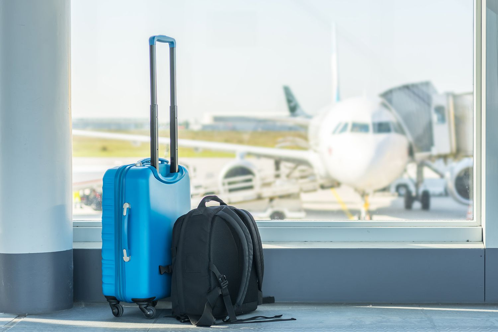

<div class="mt-24">
    <div class="relative">
        
        <div class="absolute top-24 left-14 md:left-52 md:top-44 lg:top-48 lg:left-72 ">
            <p class="font-mono font-bold text-4xl md:text-5xl lg:text-6xl xl:text-7xl text-black" >VISA FOR KENYA </p>
        </div>
    <div class="mt-20 md:grid md:grid-cols-12">
        <div class="md:col-start-2 md:col-span-6 px-4 md:pl-0 opacity-80">
            
            <p class="pt-10 text-2xl text-amber-500 font-bold">Do you want to come to Kenya but don't know how to get a Visa?</p>
            <p class="uppercase pt-4 font-extrabold">We are here to help you get an evisa for Kenya</p>
            <p>The link to the official Kenya eTA system: 
                <a href="https://etakenya.go.ke/en" target="_blank" rel="noopener noreferrer" class="text-blue-600 hover:text-red-600 cursor-pointer">
                    etakenya.go.ke/en
                </a>
            </p>
            <p class="text-2xl text-red-800 uppercase font-medium opacity-85 pt-10">GENERAL INFORMATION</p>
            <p>Kenya eTA is a semi-automated system that determines the eligibility of visitors to travel to Kenya. An eTA offers permission to travel and is authorised by the Government of the Republic of Kenya. The possession of an eTA is not the final authority to enter the Republic of Kenya. Admissibility will be determined at the point of entry.</p>
            <p class="text-2xl text-red-800 uppercase font-medium opacity-85 pt-10">HOW TO APPLY</p>
            <p>All visitors including infants and children who intend to travel to the Republic of Kenya must have an approved Electronic Travel Authorisation (eTA) before the start of their journey.

               <br><strong>Persons who are exempt from obtaining the Electronic Travel Authorisation (eTA)</strong> 
                
                <br>1.Holders of valid Kenya Passports or one-way Emergency Certificate issued by Kenya Missions abroad.
                <br>2.Holders of Kenya Permanent Residence, valid Work Permits and Passes.
                <br>3.Holders of valid Kenya eVISAs
                <br>4.Holders of valid United Nation Conventional Travel Document issued by the Government of Kenya.
                <br>5.Members of the Diplomatic Missions and International Organisations Accredited to Kenya (exempt from payment only).
                <br>6.Citizens of the East African Partner States; These countries include Burundi, Democratic Republic of Congo, Rwanda, South Sudan, Tanzania and Uganda. (Exempted for Six (6) months)
                <br>7.All passengers in transit through Kenya arriving and leaving by the same aircraft or transferring to another aircraft and who do not leave the precincts of Airports in Kenya.
                <br>8.All passengers arriving and leaving by the same ship, and who do not leave the ship.
                <br>9.Members of crew of any ship, aircraft, train, vehicle or carrier; whose name and particulars are included in the crew manifest of the ship, aircraft, train, vehicle or carrier; and who is proceeding in such ship, aircraft, train, vehicle or carrier to a destination outside Kenya.
                <br>10.Owners of private aircraft stopping over for refuelling in Kenya and who do not leave the precincts of the airport.
                
                <br><br>Please have the following documents ready before starting your application.
                
                <br><strong>For all travellers</strong>
                
                <br>- Valid passport for at least six (6) months after your planned date of arrival into Kenya, with at least one blank page 
                <br>- Selfie or passport-type photo
                <br>- Contact information, email address and phone number
                <br>- Details of your arrival and departure itinerary 
                <br>- Accommodation booking confirmation(s)
                <br>- Credit card, debit card or other means of payment
                
               <br><br><strong>Based on your country of residence and citizenships the following may also be required:</strong> Based on your country of residence and citizenships the following may also be required:
                
                <br>- Financial assets / banks letter(s)
                
                <br><br><strong>Based on your purpose of visit the following may also be required:</strong>
                
                <br>- Letter and/or appointment letter from the referring doctor/hospital
                <br>- Conference invitation/participation letter
                <br>- Employment contract
                <br>- Supporting documents for resettlement
                <br>- Vaccination(s) or test results certificates
                
               <br><br><strong>For travellers arriving for business</strong> 
                
                <br>- Invitation letter from company
                <br>- Copy of registration of the company
                
                <br><br><strong>For travellers visiting family</strong>
                
                <br>-Invitation letter from family/host
                <br>-Identity card/Passport/Alien card/Entry permit of the family member/host
                <br>
                <br>
                <br>Processing time is three (3) working days but in some cases it may take longer.
            <br><br> Each eligible traveller is required to apply for an eTA before starting travel. It is mandatory to use the Government's official website to submit your application. Applications submitted via third party websites will be automatically denied. For children under the age of 18, the legal guardian, parent or accompanying adult is responsible for filling the application.</p>
        </div>
        <div class="hidden md:block md:col-start-9 md:col-span-4 md:space-y-0">
            <div>
                <p class="font-mono font-bold text-xl">RECENT ARTICLES</p>
            
            <p routerLink="/leaving" class="pt-4 text-gray-500 hover:text-black cursor-pointer">10 Things to know before leaving.</p>
            </div>
            <div>
                
            
            <p routerLink="/packing" class="pt-4 text-gray-500 hover:text-black cursor-pointer">What to pack.</p>
            </div>
            <div>
               
            
            <p class="pt-4 text-gray-500 hover:text-black cursor-pointer">Food in Kenya</p>
            </div>
            <div>
                
            
            <p routerLink="/safari-rules" class="pt-4 text-gray-500 hover:text-black cursor-pointer">Rules during safari</p>
            </div>
            <div>
                
            
            <p routerLink="/when-to-go" class="pt-4 text-gray-500 hover:text-black cursor-pointer">When to go?</p>
            </div>

            
       </div>

    </div>


</div>
